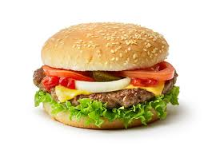

Hamburguesa

Home
Descripcion
La hamburguesa casera es un plato sencillo y delicioso que consiste en un medallón de carne picada, sazonada y cocida a la plancha o parrilla, servido dentro de un pan con diversos acompañamientos. A diferencia de las versiones industriales, la hamburguesa casera permite elegir la calidad de los ingredientes y ajustar sabores al gusto, incorporando vegetales frescos, quesos, salsas y condimentos personalizados. Es una opción versátil que puede adaptarse fácilmente a dietas carnívoras, vegetarianas o veganas.
Ingredientes
- 500gr de carne pocada
- 1 huevo (opcional)
- 2 cucharadas de pan rallado o avena
- 1 diente de ajo picado
- Sal y pimienta a gusto
- Condimentos opcionales: Mostaza, perejil, cebolla en polvo, pimentón, etc.
- Pan de hamburguesa
- Queso cheddar
- Tomate en rodajas
- Cebolla (cruda, salteada o caramelizada)
Para armar las hamburguesas
- En un bowl, colocar la carne picada
- Agregar sal, pimienta y los condimentos que prefieras
- Si querés mas union, añadí el huevo y el pan rallado o avena
- Mezclá bien con las manos hasta que esté todo integrado
- Dividi la mezcla en 4 porciones
- Calentá en una sartén, plancha o parrilla con un poquito de aceite
- Cociná las hamburguesas a fuego medio alto, unos 3-5 minutos por lado, segun el grosor
- Si usas queso, colocá la feta sobre la carne cuando des vuela la hamburguesa
- Por último, arma las hamburguesas!